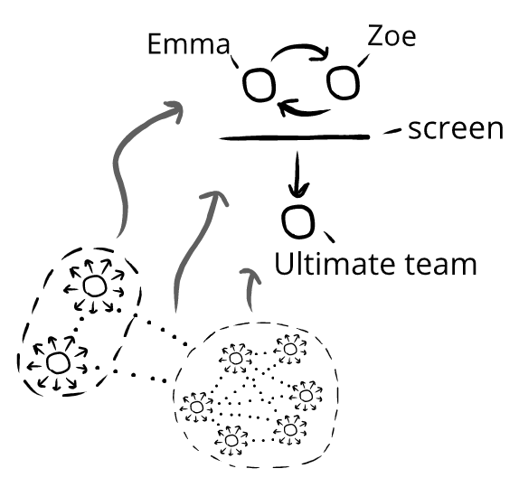

We can use emotion networks to think more about spectator entertainment:
The Ultimate team practices on the quad.
Sam and Jennifer discuss bagels.
Rosie and some friends explore an old house.
We can also observe an emotion network:
The Ultimate team practices on the quad.
Emma and Zoe watch from the top floor of the library.
Sam and Jennifer discussing bagels.
The audience watches the stage attentively.
Rosie and some friends explore an old house.
Trevor and Yasmin brace themselves. The Squeal franchise is known for jumpscares.
When Emma and Zoe watch a team practice from a window, there's like a one-way mirror for evaluatory information.
Emma and Zoe can take in evaluatory information—but their own evaluatory information is screened out:
The Ultimate team practices on the quad.
Emma and Zoe watch from the top floor of the library.
Emma:"The brunette's hot."
Zoe:"I knew you were thinking that."
Emma:(impishly)"Her hair would be nice to pull on."
Zoe:*laughs**pushes her*"Em!"(←no evaluatory information reaches Ultimate team)

Sam and Jennifer discussing bagels.
The audience watches the stage attentively.
Sam's character:"How about a stallion?"*wriggles eyebrows enticingly*
Jennifer's character:"Why is the mailman coming home early?"
Audience:*laughs*
Sam and Jennifer can hear the audience, and slightly react to it—but staunchly pretend they're not there.(←evaluatory information reaches actors, but actors pretend it doesn't)
Rosie and some friends explore an old house.
Trevor and Yasmin brace themselves. The Squeal franchise is known for jumpscares.
Rosie pauses before a small jewelry box on the table.
Yasmin:*to TV*"Don't do it!"
Rosie starts to open the box.
Trevor:*covering eyes*"Oh my fucking god, Rosie, I swear to god...!"
A ragged ghost explodes out! Yasmin and Trevor jump in their seats.
Yasmin:*laughs**heart thumping*"Fuck!!"
Trevor:*hands on his head*“Why can’t they just have the monsters and blood without the freaking jump scares?”(←no evaluatory information reaches characters)
There are different kinds of screens—some are more permeable to two-way evaluatory information than others.
Emma and Zoe could physically overcome their screen by opening the window (possibility of permeability in screen)
Sam and Jennifer could drop the pretend screen at any time, or an audience member could try to force them to by standing up and shouting at them (permeable screen)
Trevor and Yasmin will never get their evaluatory information to characters in a static medium (impermeable screen)
Consider:
Spectator entertainment with permeable screens (in-person performances) often gives us the feeling of including us, which makes them feel vivid and interesting. Things with permeable screens feel dynamic, and allow for reactive participation.
By contrast, spectator entertainment with impermeable screens (remotely viewed or a static medium) often has the feeling of excluding us, which makes them feel lifeless outside of specific circumstances.
Emotional templates. This chapter is focused on spectator entertainment. This is when the goal is the emotional experience of the audience.
Something like an Ultimate practice is not spectator entertainment, because the goal isn't what spectators feel watching practice
Instead, Ultimate practice has an observed emotion network—we can describe it from Emma and Zoe's perspective with a spectator template—but it's not spectator entertainment.
We now have two things: spectator entertainment, and spectater templates. What's the difference?
The difference is goals. If we watch a play, the goal of everyone there is to prioritize our experience as the audience. (Spectator template that's also spectator entertainment.)
But if we watch people from our window, the goal of everyone there is not to prioritize our experience as the audience. (Spectator template that's not also spectator entertainment.)
Spectator templates are common things that happen all the time. Students in classrooms; friends listening to friends bicker; patrons vaguely aware of the table over; and so on—all normal parts of daily life, where we float between different levels of mutual reactivity.
By contrast, spectator entertainment uses this template, but also alters the goals and priorities to varying degrees. This makes it a rarer version of a spectator template:
Sometimes we watch movie characters give each other insults. We laugh—but the characters are devastated:
Owen watches more of the Canadian comedy show.
The farmers, Wayne and Daryl, are throwing a baseball in front of a field. The hockey players, Reilly and Jonesy, drive up in a jeep blasting annoying music. Reilly and Jonesy get out with two smiling women, who leave. Reilly and Jonesy fist bump.
Reilly:(sarcastically)“Great day for hay, eh boys?”
Jonesy:(sarcastically)“Didja… ‘git ‘er done’?”
Reilly:*laughs*“Just kidding we don’t give a fuck.”
Jonesy:*exclaiming*“Dirty fucking dangles, boys!”
Reilly:“Had a sick day with your sisters, buddy. Ladies love the flow, bro.”*runs hands through hair*
Jonesy:“Circus flow, bro!”*fist bump*
Wayne:“Buddy, the only thing ladies love is when you quit talkin’.”
Reilly:(surprised)“What’d you say?”
Wayne:*tossing mitt on ground**pointing at Reilly*“You heard me.”
Wayne and Daryl come over to stare down Reilly and Jonesy.
Wayne:“Buddy, you’re softer than a tootsie roll fruit cup.”
Daryl:“You look like the skunk my dog killed and probably raped.”
Wayne:“Get your board shorts outta here, you fucking pansy.”
Daryl:“Take your tank tops and your Tonka truck and kick rocks.”
Wayne:“Cake eater.”
Daryl:“It is a great day for hay.”
Wayne:“What’s it to ya?”
Reilly:*surprised* “Boys.”
Jonesy:“Boys.”
Wayne:“’Boys, boys,’ quit talking the same. Do you share a set of testicles and a tongue?”
Daryl:“Get real.”
Wayne:“I bet you got a handful of names for your own horn, dontcha bud.”
Daryl:“You smell like nachos and you look stoned.”
Wayne:“You write Taylor Swift lyrics in birthday cards.”
Daryl:“You prefer kittens and you kiss babies.”
Wayne:“You’re fuckin’ ten-ply bud.”
Reilly:(stunned)(impressed)*removes sunglasses*“Fellas. That was some of the finest chirping I’ve ever received.”
Jonesy:(speechless) “Ever.”
Wayne:“Oh yeah?”(sarcastically)“Did we ‘git ‘er done’?”
Daryl:“Just kidding. We don’t give a fuck.”
Wayne:“Keep away from our sisters.”
Reilly and Jonesy, chastened, turned slowly in defeat and walk away. Daryl spits.
Owen laughs. He has to watch it again to catch everything.
Owen feels humor watching the clip, but the characters in the show don't feel nearly as much humor.
We can think about this by looking at two different interaction templates. In an interpersonal template, people are mutually reactive to each other. But in a spectator template, the characters aren't reactive to the spectator.
The spectator template is what allows spectator entertainment to have things both ways: the characters can feel mistake-predominant emotions from insults, while the spectators can feel humor from those insults:
Consider:
Just because we laugh at insults in spectator entertainment doesn't mean we can make our friends laugh by insulting them.
It's not that insults don't ever make our friends laugh—since they do! Instead, it's that we can't transfer things wholesale between spectator and interpersonal templates without modification.
Admiration without aspiration. The clip of the farmers and hockey players was seen millions of times, with people admiring it for its caricature, delivery, pacing, scripting, and so on. One of the top comments saw the dialogue as loosely aspirational:
Commenter: “How would a person get that good at comebacks and insults? I mean I know it’s all scripted but shit. That’s superhuman levels of wit.”
The commenter answered their own question! We can’t get that good at comebacks and insults. The writers of the show aren’t that good at spontaneous comebacks and insults. They had a long production cycle and lots of crew to create an illusion of superhuman spontaneity.
Sometimes we think we’re supposed to be able to be like people in comedies because we like comedies. But we’re not supposed to be—for the same reason we don’t think we’re supposed to be like action heroes just because we like action movies.